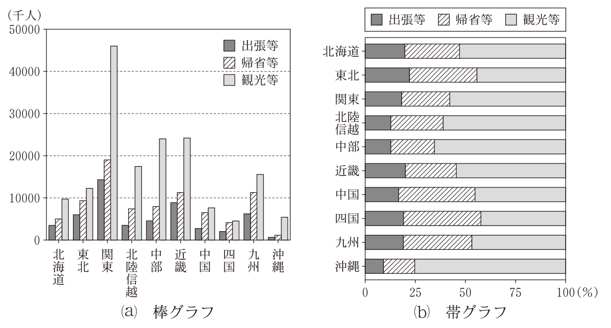
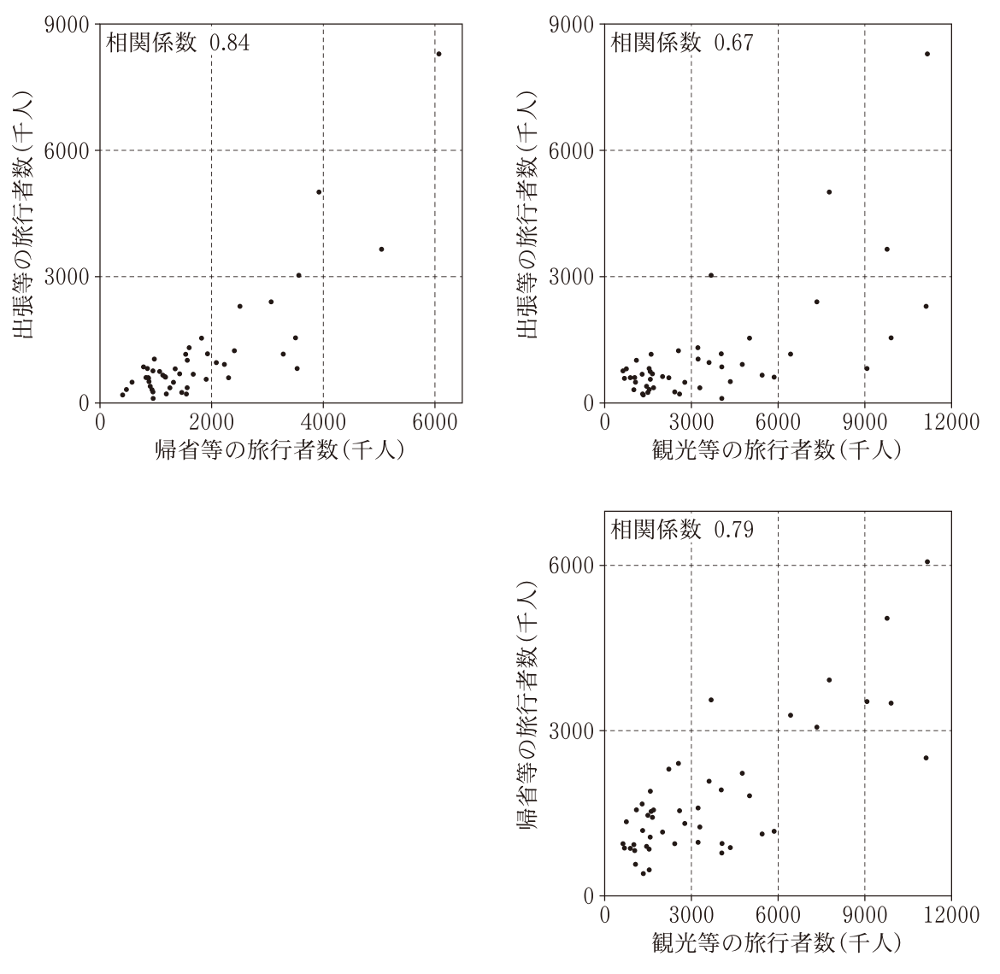
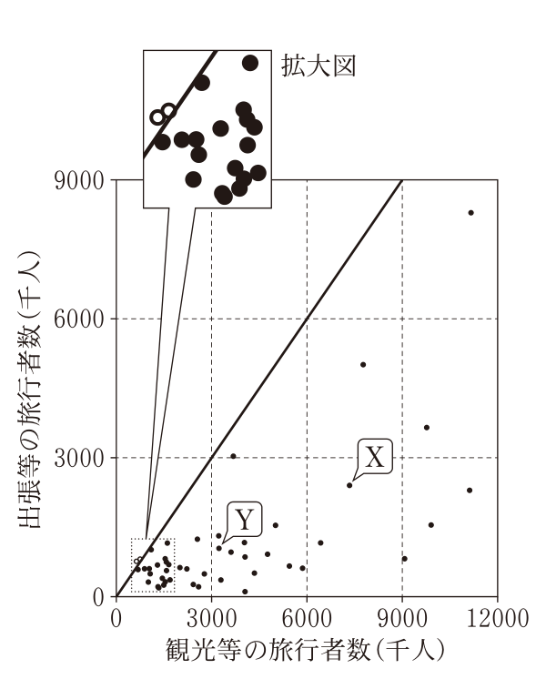
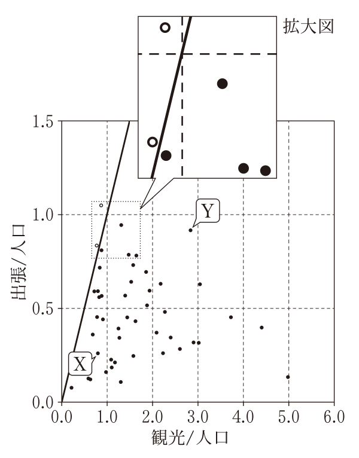
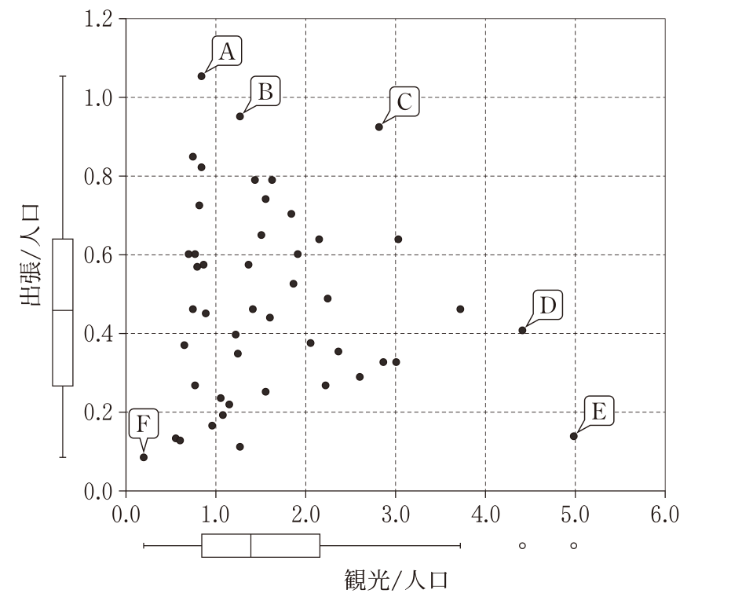

第4問 次の文章を読み，後の問い（問1～4）に答えよ。（配点25）
旅行が好きなUさんは，観光庁が公開している旅行・観光消費動向調査のデータのうち，2019年の結果を用いて，さまざまな観点で旅行に関する実態を分析してみることにした。なお，以下では延べ旅行者数を旅行者数と呼ぶ。
表1には，地方ごとに，その地方を主な目的地として宿泊旅行をした旅行者数がまとめられている。また，この表では，旅行の目的を出張等，帰省等，観光等の三つに分け，それぞれの旅行者数とその合計が集計されている。
| 番号 | 地方 | 出張等 | 帰省等 | 観光等 | 合計 |
|---|---|---|---|---|---|
| 1 | 北海道 | 3652 | 5052 | 9768 | 18472 |
| 2 | 東北 | 6161 | 9410 | 12365 | 27936 |
| 3 | 関東 | 14401 | 19138 | 45943 | 79482 |
| … | … | … | … | … | … |
| 10 | 沖縄 | 662 | 1127 | 5446 | 7235 |
問1 次の文章を読み，空欄 ア ～ エ に入れるのに最も適当なものを，後の解答群のうちから一つずつ選べ。ただし，空欄 ウ ・ エ の解答の順序は問わない。
Uさんは，表1を見せながら，T先生に相談した。
Uさん：この表からわかる情報を把握しやすくするために，グラフを作ろうと思っています。
T先生：グラフを作る前に，表の各項目の尺度水準を確認してみましょう。地方については，どの尺度水準だと思いますか。
Uさん：郵便番号などと同じで， ア だと思います。
T先生：そうですね。では，番号と地方以外の項目については，どうでしょうか。
Uさん：これらの項目は旅行者数を示すので， イ でしょうか。
T先生：はい，そのとおりです。それでは，地方による旅行者数の違いがわかりやすくなるように，棒グラフと帯グラフを作ってみましょう。
Uさんは，図1のグラフを作成した。これらのグラフから， ウ ことや エ ことなど，地方による傾向の違いを読み取ることができた。

問2 次の文章を読み，空欄 オ ・ カ に入れるのに最も適当なものを，後の解答群のうちから一つずつ選べ。ただし，解答の順序は問わない。
続いてUさんは，都道府県ごとの旅行者数と旅行目的別の内訳が集計されている表2をもとに，さらに詳細な分析を進めることにした。
Uさんはここで，目的別の旅行者数の間にどのような関係があるかについて関心をもった。そこでUさんは，図2のように，各目的の旅行者数を組み合わせた散布図を作成し，相関係数を求めた。
これらの散布図と相関係数のみから読み取れることは， オ ことや， カ ことなどである。
| 番号 | 都道府県 | 出張等 | 帰省等 | 観光等 | 合計 |
|---|---|---|---|---|---|
| 1 | 北海道 | 3652 | 5052 | 9768 | 18472 |
| 2 | 青森県 | 1015 | 1566 | 1097 | 3678 |
| 3 | 岩手県 | 1158 | 1537 | 1606 | 4301 |
| … | … | … | … | … | … |
| 47 | 沖縄県 | 662 | 1127 | 5446 | 7235 |

問3 次の文章を読み，空欄 キ ・ ク に入れるのに最も適当なものを，後の解答群のうちから一つずつ選べ。
Uさんは，各都道府県の出張等と観光等の旅行者数の関係に着目し，縦軸と横軸の値が等しい直線を記入した散布図（図3）を作成した。この散布図中に完全に重なっている点はないが，多くの都道府県が観光等の旅行者数が3000千人以下の範囲に集中しているため，異なる指標を使った散布図も作成することにした。
Uさんは，人口が多い都道府県には旅行の目的地になる場所（企業や観光名所など）が多く，旅行先になりやすいのではないかと考え，「出張等と観光等の旅行者数を，旅行先の各都道府県の人口で割った値」を指標とし，それぞれを出張/人口，観光/人口と呼ぶことにした。これらの指標は，旅行先の人口を基準として相対的に各目的の旅行者が多いか少ないかの程度を示すことになる。そこでUさんは，総務省統計局が公開している2019年度の都道府県ごとの人口のデータ（表3）を入手し，「出張/人口」と「観光/人口」の組合せについて，縦軸と横軸の値が等しい直線を記入した散布図（図4）を作成した。なお，この散布図中に完全に重なっている点はない。
図3と図4のいずれの散布図にも，直線の上側に白抜きの丸で示した二つの点がある。各図の白抜きの二つの点について， キ 。
また，これらの散布図上にある点X と点Y は，それぞれ同じ都道府県を示している。二つの散布図でこれらの点について，縦軸と横軸の両方で値の大小が逆転している理由は，点X の都道府県よりも点Y の都道府県の方が ク ためである。
| 番号 | 都道府県 | 人口（千人） |
|---|---|---|
| 1 | 北海道 | 5259 |
| 2 | 青森県 | 1253 |
| 3 | 岩手県 | 1226 |
| … | … | … |
| 47 | 沖縄県 | 1462 |


問4 次の文章を読み，空欄 ケ に当てはまる数字をマークせよ。また，空欄 コ ～ シ に入れるのに最も適当なものを，後の解答群のうちから一つずつ選べ。
Uさんは，「出張/人口」と「観光/人口」の関係について，より詳しく分析することにした。そこで，図4の散布図の各軸に沿って各指標の分布を表す箱ひげ図（外れ値は〇で表記）を併記したもの（図5）を作成した。
図5を見ると，例えば，観光等の旅行者が人口の4倍以上訪れる都道府県を表す点の数は ケ 個である。このように，指標の値を見ることで，都道府県の人口に対して目的別の旅行者数がどの程度であったかを知ることができる。
そこでUさんは，今回の分析において，「出張/人口」がその第3四分位数より大きい都道府県を出張等が多めの都道府県，「観光/人口」がその第3四分位数より大きい都道府県を観光等が多めの都道府県と呼ぶことにした。このように決めた場合， コ が最も多い。
Uさんは，「出張等も観光等も多めの都道府県」と，「出張等は多めではないが観光等は多めの都道府県」がなぜそのような状況になっているのかに興味をもった。図5においてA～F で示した都道府県のうち，「出張等も観光等も多めの都道府県」は サ である。一方，「出張等は多めではないが観光等は多めの都道府県」は複数あるが，その中で「出張/人口」を「観光/人口」で割った値が最も小さい都道府県を考えると， シ となる。
